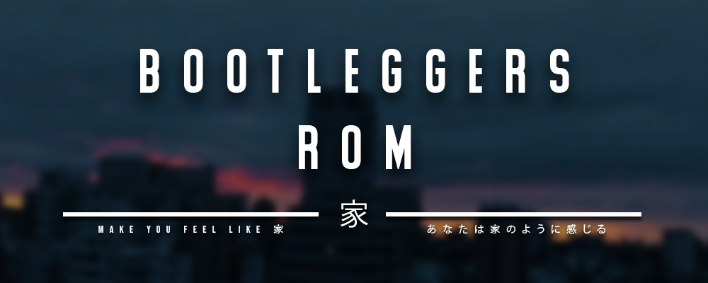
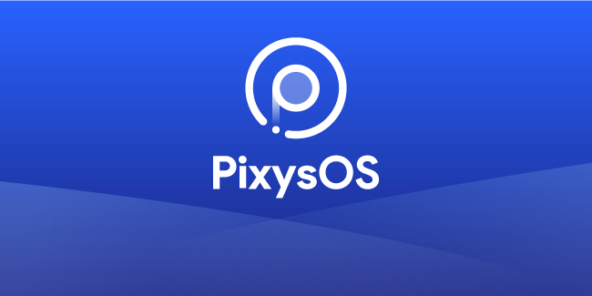
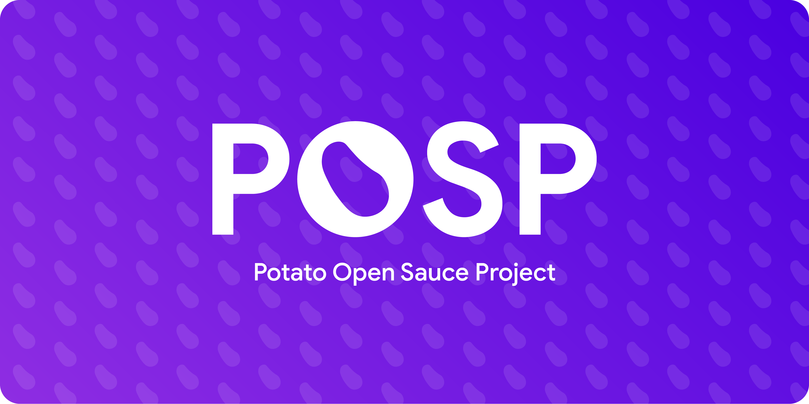
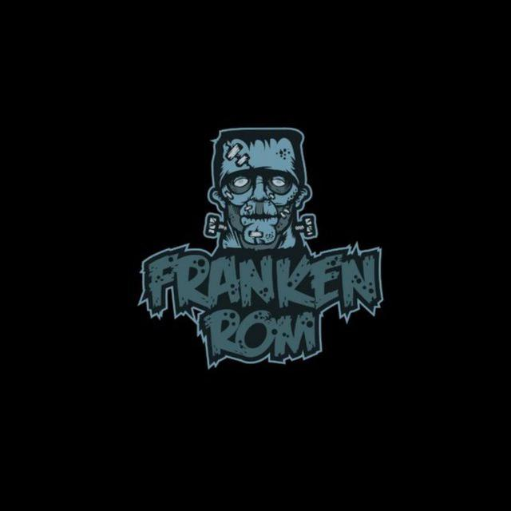

Android 10 Bringup for Oneplus One
Booting and fixing bugs on a 5yr old device Oneplus One aka Bacon. Worked as a team with another Bacon Develeoper xawlw. Big thanks to him.
Another random guy trying to learn some stuff and gain some skills. Having Massive Interest in Android and tech. I am 20 year old and Pursuing BCA final year from SGGS College, Sector 26, Chandigarh
Booting and fixing bugs on a 5yr old device Oneplus One aka Bacon. Worked as a team with another Bacon Develeoper xawlw. Big thanks to him.

Bootleggers ROM is an aftermarket firmware based on AOSP with some patches and fixes from LineageOS and various other projects.

Pixys is a butter smooth Android aftermarket firmware. We handpicked the best features around and are adding our own juice into it. We aim to deliver an experience with original ideas and features along with the useful things the community is accustomed to.

Potato Open Sauce Project is a butter smooth Android aftermarket firmware. We handpicked the best features around and are adding our own sauce to it.

A Custom Android ROM purely based on AOSP sources, focusing on perfomance & UI, rather than bloat features. The aim is to create a minimal ROM which includes various tweaks users would expect from a custom ROM

FrankenRom is an aosp and lineage,nitro based mixer of pieces of all roms to form a franken style..We are back for pie with a new settings based off owls nest [aosip] and new tweaks